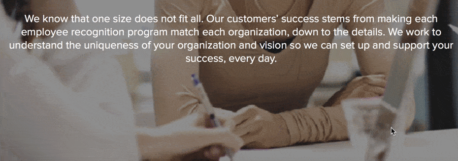

1. Achievers :-
Achievers is an excellent example of a services page layout that works. Right at the top of the page, Achievers presents an engaging visual and short description of how they help you create a successful employee recognition program.
As you scroll down the page, you’ll see different visual elements.
You’ll see a statistic that focuses on typical user adoption of the programs they develop. Scroll further, and you’ll see icons loading on the page, one by one, that highlight the results of their services, like better employee retention.
If you continue scrolling, you’ll see stats about Achievers’ performance.
These visual elements draw users in as they count up to the right percentage.
Why it works
Achievers is one of the best service page web design examples for putting your customers first. Their service page focuses on their clients and what Achievers can provide for them. The design is simple, too.
Achievers’ uses a few visual elements, like the loading percentages and icons, to draw users in and get them interested. The design gets audiences excited enough to keep scrolling. It’s also simple enough to prevent users from feeling overwhelmed.
Overall, Achievers has a well-balanced and straightforward services page layout that focuses on the user and integrates small moving elements to catch the reader’s attention and keep them engaged.
Takeaways from this services page layout
A crucial takeaway from this web design example for a service page is the focus on the user. When you design your service pages, focus on providing users with the best possible experience. Make it easy for them to find information about your services.
Not only do you want to focus on the user in your text, but you also want to add elements that make your page more engaging. It will help keep leads on your page longer, so they can learn about your services and contact your business.
2. Arcurve :-
Arcurve’s service page layout is simple. They have a Venn diagram that contains their full lifecycle services and technologies.
The user can see what services the company offers in an instant.
If they find a service that fits their needs, the user can click on the service, which will open a pop-up box that details what the service includes. If the service doesn’t meet the user’s needs, they can press the “X” button and return to the original services pages.
It’s a simplistic design that allows users to access the information they need without any frills or fluff.
If users like what they see, they can click a contact button underneath the diagram and connect with Arcurve.
Why it works
Arcurve makes something as complicated and involved as software development simple. They make it easy and straightforward for users to find relevant information.
Users see a list of their services, which they can click for more information. They can also quickly find their way back to the services page without clicking the back button or opening a new window. This website is one of the best service page web design examples because of its simplicity.
It helps users find what they need without having to dig around for information.
Takeaway from this service page layout
Simplicity is key. While your service page doesn’t need to be as simple as Arcurve’s, it serves as an excellent example of a clean and simple web design for service pages. By cutting out the fluff and focusing on providing users with the information they need, you’ll develop a better service page.
People will find your information faster and won’t need to comb through your entire service page to uncover what they need. When you provide users with information quickly, they’re more likely to choose your business.
3. Hootsuite :-
If you’re looking for service page web design examples with elements that pop, Hootsuite is one of them. Their service page uses images that pop on their page and draw users in to learn about their services.
The eye-catching visuals appear as you scroll down the page.
When you move down their services page, you’ll see two types of services: For users getting started and for users needing ongoing help.
As you look at both service options, you’ll see the features and accompanying visuals. This section is where Hootsuite provides a great visual experience.
These visual elements catch the user’s attention as they scroll. Each image includes one of the following colors: Yellow, orange, or purple. Hootsuite’s color choices make for bold visuals that draw users into the content.
Why it works
Color visuals help increase readership on your page by 80%.
People love visuals, and seeing beautiful, colorful images catches their attention. It engages them and makes them more likely to interact with your content. Hootsuite’s choice of bold images works because of users’ desire to have visual elements.
A study conducted on visuals showed that presentations with visuals are 43% more persuasive than those without visuals. If you think about Hootsuite’s service page as a presentation, they’re increasing its persuasiveness by adding bold images.
Takeaway from this services page layout
Visuals are a vital component to your services page. If you want to increase your persuasiveness and get more people to engage with your content, add colorful visual elements to your page.
It will help keep your audience on your page longer.
4. Cart2 :-
If you want to know how to create a service page, look at Cart2Cart for inspiration. Cart2Cart draws users in immediately with their moving selection feature.
If you click the drop-down menu for each box, you open a pop-up window that allows you to choose from different cart options.
So, immediately, Cart2Cart draws users in with this interactive element. If you keep scrolling down the page, you’ll see more information about what you get with their services.
It’s broken down into different sections, like data migration and migration insurance, with accompanying visuals for each.
This page is interactive, organized, and easy for users to follow, which makes it a great inspiration for how to create a service page that works for your business and your target audience.
Why it works
Cart2Cart’s service page works because it’s interactive but straightforward. The tool at the top of the page immediately draws users in and gets them to interact with the page.
It makes people more likely to stay on their page and engage with their content.
Takeaway from this services page layout
Creating interactive elements on your page increases engagement. Whether it’s something like Cart2Cart’s selection feature or a video, interactive elements draw users in and get them to stay on your page. You can use this example for inspiration when trying to create engaging features on your service pages.
5. Stortford Interiors :-
Stortford Interiors is one of the best service page web design examples in terms of visual engagement. This service page draws users in with multiple elements. The design is fitting for an architectural contractor and highlights their stunning work.
When you get to their services page, a beautiful photo of the work they’ve done greets you.
As you scroll down the page, it gets even more eye-catching. One of the unique features of this page is that the lines from the circle load as you scroll down the page.
There’s text on one side and an image with a circle on the other side. The sides alternate as you scroll down the page. This feature guides the user’s eye to the next section and gets them to continue scrolling.
Additionally, each section focuses on a type of service and the sub-services below it. For example, the first section focuses on the core building services and lists drywall, suspended ceilings, and glass wall below. If someone is looking for core services, they can find all those services in one area.
This website is an excellent example of web design for services pages because it focuses on creating a simple yet visually appealing page.
Why it works
This website is a prime example of how to create a service page that engages users visually. Stortford’s web design fits with its brand too. They focus on making a visually appealing service page that’s reflective of the simple and attractive rooms they create.
It also keeps users engaged. Stortford uses the circles and lines to direct people to the next section of information and keep them scrolling.
Takeaway from this services page layout
Stortford’s services page layout is a prime example of how you should reflect your brand in your business’s service pages. They stuck to a simple, sleek, and modern design, just like the rooms they build.
Reflecting your brand in your service pages will help more people remember your business.
6. Domo :-
Domo is one of the best service page web design examples when it comes to organization. When you visit their service page, you can choose solutions based on your company role, like sales, IT, or operations. As you hover over a position, you can see a tidbit of information about how their service will help someone in that role.
If you want to look by industry, scroll down and select your industry.
You can also choose solutions based on the source of your data.

Domo creates a smooth and visually appealing service page that helps users choose solutions based on what’s best for them.
The page is organized and allows users to navigate to the right services quickly.
Why it works
Domo created an interactive and organized website that makes it easy for users to find what they need. Their audience doesn’t struggle and wade through information to find answers. It’s a simplistic design that allows users to get information fast.
Takeaway from this services page layout
Creating a functional and organized page is key to keeping people engaged.
If users can’t find information quickly, they’ll leave your page. Users want information fast, and Domo’s design helps users do just that. An important takeaway from this web design example is the organization.
Having good organization will keep leads on your page longer and cause them to spend more time checking out your company.
Start creating your unique service page today
Your service page plays a crucial role in turning leads into conversions. You must invest time in developing a service page that provides your audience with valuable information and keeps them engaged.
If you want to know how to create a service page, WebFX can help. With a team of award-winning designers, we’ll help you create unique, brand-focused service pages that engage your audience and get them to learn about your services — and contact you about them. Are you ready to get more people to engage on your service page?
Are you ready to boost sales with web design? Contact us online or call us today at 902-762-0365 to speak with a strategist about our web design services!